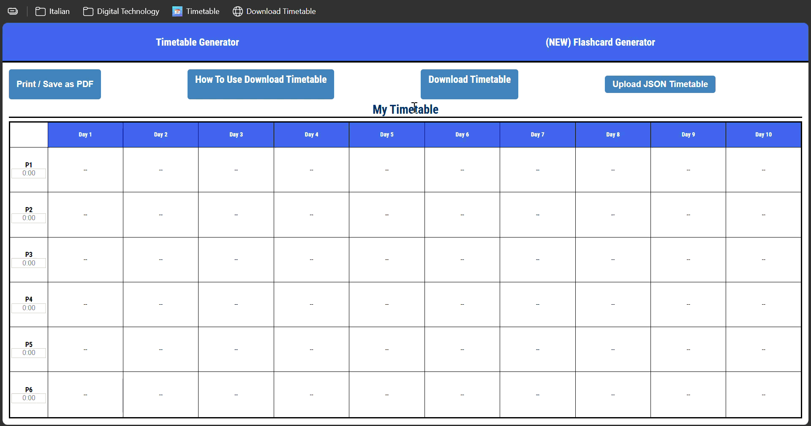

Set print to portrait with "none" margins. (Can print on A4 page for diary sized timetable).
Set print landscape with "none" margins.
Type in any font name and it will load into the timetable. Fonts can be found at https://fonts.google.com/.
Set print to portrait, A4 and no margin for best results
First, Click and hold the download timetable button and drag it onto your bookmark bar.
If you dont have a bookmark bar click the three dots in the top right then settings, appearance, toolbar and set favorites bar to always

Then, Open the bookmark while on the main timetable page
Finally, Upload the downloaded file.
All of the navigation bars in the legacy generators do not work.